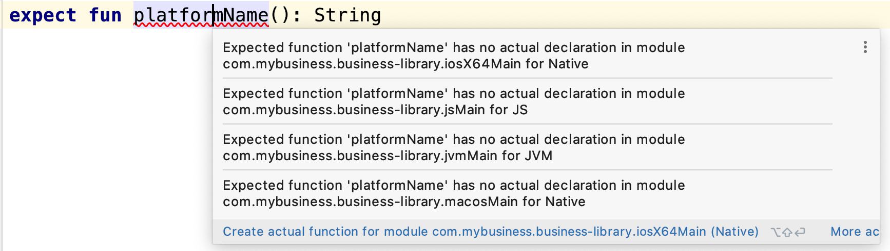
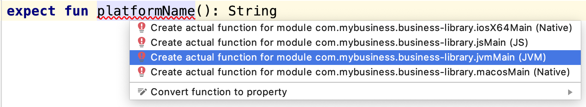
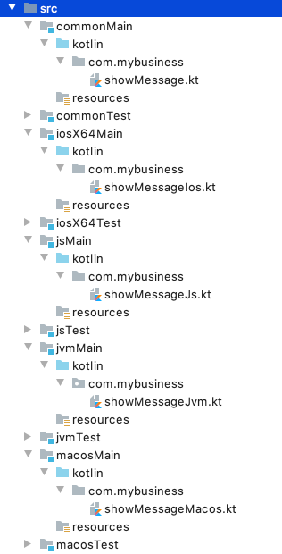
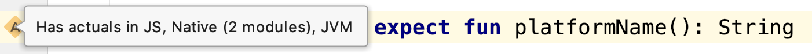
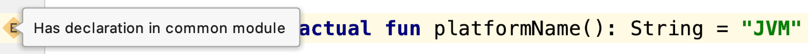
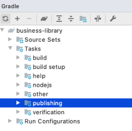
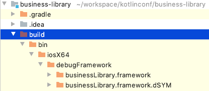
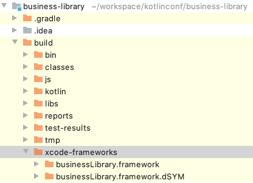

In some specific cases the common code cannot be shared, often due to platform’s internal infrastructure or definition.
Take dates, for example. Their definition is not the same on JVM, iOS or JavaScript, thus we should be able to provide a sort of bridge for each platform.
Another example: the coroutines cannot be used in the same way on Android and iOS, as Kotlin/Native does not allow (yet) multithreading in a coroutine context.
So we should be able to work with every specifics of each platform in our common code.
What is expected must actualy exist
Kotlin/Multiplatform provides a way to define an expect/actual mechanism.
In the common code, we define the expected behaviors, allowing us to provide the actual behaviors in each targeted platform.
The expectation [expect] code will be defined in the common module:
-
commonMain
expect fun logMessage(message: String)And the implementation [actual] will be defined for each targeted platform:
-
jsMain
actual fun logMessage(message: String) = console.log(message)-
iosX64Main
actual fun logMessage(message: String) = NSLog(message)-
jvmMain
actual fun logMessage(message: String) = Logger.getLogger("App").log(Level.INFO, message)-
linuxMain
actual fun logMessage(message: String) = printf("%s\n", message)Write your first multi-platform code!
In this section we will prepare our common code to be executable and testable for each targeted platform.
To show you how it works, and how yo play with the expect/actual mechanism, we will use a simple example.
For each targeted platform, we will print on the screen/console a message, with a specific part, different for each platform.
Hello KotlinConf, Kotlin/Multiplatform is awesome! (1)
We are running on JVM! (2)| 1 | Common message for every platform |
| 2 | Platform specific message, for the JVM is this case |
Let’s code!
[expect] common shared code
This is where you will write most of your code in a Kotlin/Multiplatform project. The goal is to put a maximum effort in here, to avoid code duplication.
First, create a new file src/commonMain/kotlin/com.mybusiness/showMessage.kt, and add the following code:
package com.mybusiness
fun sayHelloKotlinConf() =
"""
Hello KotlinConf, Kotlin/Multiplatform is awesome!
We are running on ${ platformName() }
""".trimIndent()
expect fun platformName(): StringDo you notice something weird ?
Indeed, IntelliJ will show you some errors on the platformName() function.
This is because we’ve used the expect keyword without defining any actual behavior yet.
|
If you put your cursor on the function name you’ll see the following tooltip  |
To fix this error we will need to provide an actual implementation for the platformName() function, for every targeted platform.
[actual] platform specific code
Following the previous section you’ll have to provide an actual function platformName() for each platform you are targeting.
Meaning, you’ll have to create a new kotlin file for each platform:
|
By convention, the naming of the files that contains actual definition is [expect filename][platform].kt
|
package com.mybusiness
actual fun platformName(): String = "JVM"package com.mybusiness
actual fun platformName(): String = "JavaScript"package com.mybusiness
actual fun platformName(): String = "Linux"package com.mybusiness
actual fun platformName(): String = "iOS"|
You can use the Context Actions in IntelliJ (Linux/Windows  |
Now, you should have the following source map

|
In IntelliJ you can quickly spot   |
Testing your multi-platform library
To empower our example, we should provide some tests for each of the targeted platform.
Our test environment is already configured, so we just have to write a test for our sayHelloKotlinConf()
function, on every platform.
|
Reminder: Every source set is divide into two parts, Main and Test. Here we will work on the Test part |
Testing the common code
Add a class SayHelloKotlinConfTest for the common Test module.
import com.mybusiness.sayHelloKotlinConf
import kotlin.test.*
class SayHelloKotlinConfTest {
@Test
fun testSayHelloCommon() {
assertEquals(
"Hello KotlinConf, Kotlin/Multiplatform is awesome!",
sayHelloKotlinConf().lines().first()
)
}
}Testing the platform specific code
Add a test class SayHelloKotlinConfTest for each platform specific Test module.
|
As for the
|
import com.mybusiness.sayHelloKotlinConf
import kotlin.test.*
class SayHelloKotlinConfJvmTest {
@Test
fun testSayHelloJvm() {
assertEquals(
"We are running on JVM",
sayHelloKotlinConf().lines().last()
)
}
}import com.mybusiness.sayHelloKotlinConf
import kotlin.test.*
class SayHelloKotlinConfJsTest {
@Test
fun testSayHelloJs() {
assertEquals(
"We are running on JavaScript",
sayHelloKotlinConf().lines().last()
)
}
}import com.mybusiness.sayHelloKotlinConf
import kotlin.test.*
class SayHelloKotlinConfLinuxTest {
@Test
fun testSayHelloLinux() {
assertEquals(
"We are running on Linux",
sayHelloKotlinConf().lines().last()
)
}
}import com.mybusiness.sayHelloKotlinConf
import kotlin.test.*
class SayHelloKotlinConfIosTest {
@Test
fun testSayHelloIos() {
assertEquals(
"We are running on iOS",
sayHelloKotlinConf().lines().last()
)
}
}You can now run all your tests with Gradle.
In the Gradle pane, double click on Tasks > verification > allTests to run the allTests Gradle task.
You should have the following output:
...
SayHelloKotlinConfTest.testSayHelloCommon PASSED
SayHelloKotlinConfJsTest.testSayHelloJs PASSED
...
SayHelloKotlinConfTest > testSayHelloCommon PASSED
SayHelloKotlinConfJvmTest > testSayHelloJvm PASSED
...
SayHelloKotlinConfTest.testSayHelloCommon PASSED
SayHelloKotlinConfLinuxTest.testSayHelloLinux PASSED
...Cool, right ?
The iOS special case
| This part is for MacOS users that have already installed Xcode |
As we already saw, by default, the Kotlin/Multiplatform does not provide an iosTest task.
So we need to manually define it with the following block at the end of our Gradle build file.
val iosTest: Task by tasks.creating { (1)
val testExecutable = kotlin.targets
.getByName<KotlinNativeTarget>("iosX64").binaries.getTest("DEBUG") (2)
dependsOn(testExecutable.linkTaskName) (3)
group = JavaBasePlugin.VERIFICATION_GROUP
description = "Runs tests for target 'ios' on an iOS simulator"
doLast { (4)
exec {
val device = project.findProperty("iosDevice")?.toString() ?: "iPhone 8" (5)
commandLine( "xcrun", "simctl", "spawn",
"--standalone", device, testExecutable.outputFile.absolutePath) (6)
}
}
}
tasks.getByName("allTests").dependsOn(iosTest) (7)| 1 | Create a new task named iosTest |
| 2 | Find the compiled executable for the source set iosX64 defined earlier |
| 3 | The new task must depends on the executable compilation task |
| 4 | This block is the part of the task that will be executed each time we call iosTest |
| 5 | Define a targeted iPhone simulator to execute the tests on |
| 6 | Execute a command that will spawn the iPhone simulator and run our tests |
| 7 | Set the iosTest task as part of the test chain |
Now you can rerun your task allTests and you will see new lines printed.
...
> Task :iosTest
...
[==========] Running 2 tests from 2 test cases.
[----------] Global test environment set-up.
[----------] 1 tests from SayHelloKotlinConfTest
[ RUN ] SayHelloKotlinConfTest.testSayHelloCommon
[ OK ] SayHelloKotlinConfTest.testSayHelloCommon (0 ms)
[----------] 1 tests from SayHelloKotlinConfTest (0 ms total)
[----------] 1 tests from SayHelloKotlinConfIosTest
[ RUN ] SayHelloKotlinConfIosTest.testSayHelloIos
[ OK ] SayHelloKotlinConfIosTest.testSayHelloIos (0 ms)
[----------] 1 tests from SayHelloKotlinConfIosTest (0 ms total)
[----------] Global test environment tear-down
[==========] 2 tests from 2 test cases ran. (0 ms total)
[ PASSED ] 2 tests.
...Building and publishing your multi-platform library
Before going further, we need to prepare our multi-platform library by building and publishing it with Gradle.
In your Gradle build file build.gradle.kts add the plugin maven-publish and change the version of your library, 1.0.0 to be proud :)
plugins {
//...
`maven-publish` (1)
}
//...
version = "1.0.0"| 1 | Notice the use back ticks ` |
In the Gradle pane, you should see a new task group, named publishing (hit the refresh button if you don’t).

Then, in Tasks > publishing, double click on publishToMavenLocal to run this Gradle task.
$ ls ~/.m2/repository/com/mybusiness/
business-library-iosx64 (1)
business-library-js
business-library-jvm
business-library-linux (2)
business-library-metadata
$ ls .m2/repository/com/mybusiness/business-library-jvm
1.0.0
maven-metadata-local.xml
$ ls .m2/repository/com/mybusiness/business-library-jvm/1.0.0
business-library-jvm-1.0.0-sources.jar
business-library-jvm-1.0.0.jar
business-library-jvm-1.0.0.pom| 1 | if you are targetting iOS |
| 2 | or macos, or mingw |
| On a real world project, you may publish your library to a remote repository (Maven / Bintray / etc). |
The iOS special case
Building libraries for iOS is also a special case in our build script. In fact, to be able to use our common library in Xcode, we need to build a framework directory.
First, in the target definition for iOS we need to add the following block of code:
kotlin {
//...
iosX64 {
binaries {
framework { (1)
baseName = "businessLibrary" (2)
}
}
}
//...
}| 1 | define that the output binaries must be a framework file… |
| 2 | …with the name businessLibrary |
|
If you run the Gradle task  |
To use this newly generated framework file in Xcode we need to provide a new Gradle task to copy it into a shared place.
Add the following block at the end of your Gradle build file:
//...
val packForXcode by tasks.creating(Sync::class) { (1)
val mode = System.getenv("CONFIGURATION") ?: "DEBUG" (2)
val framework = kotlin.targets
.getByName<KotlinNativeTarget>("iosX64")
.binaries.getFramework(mode)
inputs.property("mode", mode)
dependsOn(framework.linkTask) (3)
val targetDir = File(buildDir, "xcode-frameworks")
from({ framework.outputDirectory }) (4)
into(targetDir) (5)
}
tasks.getByName("build").dependsOn(packForXcode) (6)| 1 | Create a new task to make the framework available for Xcode |
| 2 | Selecting the right configuration depending on the environment variables set by Xcode build |
| 3 | The new task depends on the fact that the framework has been built |
| 4 | Move the built framework from the build directory |
| 5 | To a new location (could/should be a remote path) |
| 6 | Set the packForXcode task as part of the build task |
Now after running the Gradle task build, by double clicking on Tasks > build > build, you should see the following build tree:
